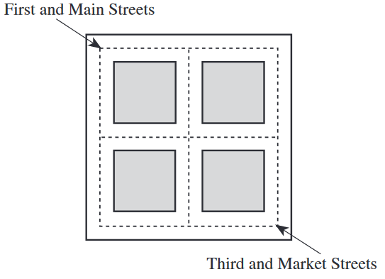

Using the street map shown below, you are directed to
take a 4-block-long route to walk from First and Main
Streets to Third and Market Streets. If each of the
different 4-block-long routes consists of a unique
sequence of streets, how many such routes could you
take?

List out all of the options:
Right, Right, Down, Down
Right, Down, Right, Down
Right, Down, Down, Right
Down, Right, Down, Right
Down, Down, Right, Right
Down, Right, Right, Down
This is a permutation problem, where ordering does matter. We can think of having 4 total moves,
where we wish to choose the different options of placing the two 'right' movements.
$$ {}_nP_r = \frac{n!}{(n-r)!}$$
$$ {}_4P_2 = \frac{4!}{(4-2)!} $$
$$ = \frac{4!}{2!} $$
$$ = \frac{4\cdot 3\cdot 2}{2}= 12 $$
We need to remove redundancies, such as when we pick:
$$ R_1, R_2, D_1, D_2 \text{ is equal to } R_2, R_1, D_2, D_1$$
We can divide the number we got from the permutation by 2, since there are two copies of every movement:
$$ \frac{12}{2} = \boxed{6} $$
Grid movements can be solved with combinations.
$$ {}_nC_r = \frac{n!}{(n-r)!r!}$$
$$ {}_4C_2 = \frac{4!}{(4-2)!r!} $$
$$ = \frac{4\cdot 3\cdot 2}{2\cdot 2} $$
$$ = \boxed{6} $$